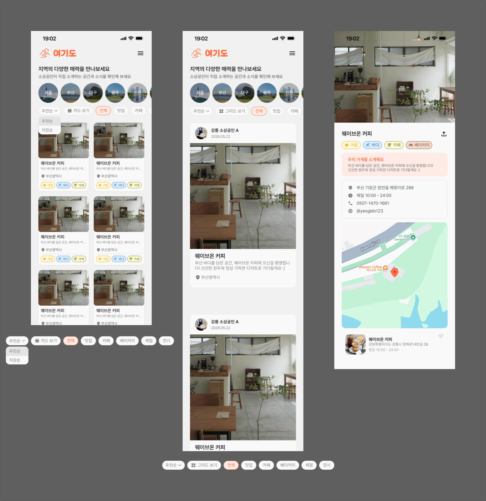

Overview
어떤 서비스인가요?
지역의 숨은 명소와 문화행사, 소상공인 공간을 발견하고 여행 코스와 기록을 공유하는 지역 기반 여행 플랫폼입니다.

서비스 소개용 와이어프레임 · 소상공인 홍보 화면. 제 담당 영역은 인증·회원입니다.
My contribution
제가 맡은 범위
이메일·소셜 로그인부터 토큰 재발급, 프로필 관리, 비밀번호 재설정과 회원 탈퇴까지 인증·회원 도메인을 담당했습니다.
인증 생명주기
이메일 인증·회원가입·로그인, 카카오·네이버 소셜 로그인, JWT 필터, 토큰 재발급·로그아웃을 구현했습니다.
회원 정보와 상태
프로필 조회·수정과 이미지 처리, 비밀번호 재설정, 회원 탈퇴 및 탈퇴 회원 인증 차단 정책을 구현했습니다.
프론트엔드 연동
Provider별 전달값과 필수값을 구분하고, 프로필 선택값·지역 ID·Swagger 계약을 화면 요구사항에 맞췄습니다.
여행 코스·문화 콘텐츠·소상공인 기능은 서비스 전체 범위입니다. 제 기여는 인증·회원 도메인과 프론트엔드 인증 계약을 중심으로 정리했습니다.
인증 구조의 변경- 변경 전 · 토큰 조회 → 비교 → 별도 저장
- 변경 후 · Lua에서 비교 + 교체를 원자적으로 실행
- 확장 · userId + sessionId별 Refresh Token 관리
구현 구조 요약
Problem → Decision → Evidence
문제와 해결 과정
Case 01
토큰 검증과 교체 사이의 경쟁 조건 줄이기
- 문제
- 기존 토큰을 읽어 비교한 뒤 새 값을 따로 저장하면, 두 재발급 요청이 모두 같은 기존 토큰 검증을 통과할 수 있었습니다.
- 변경
- Redis Lua Script 안에서 기존 값 비교와 새 토큰 저장을 하나의 원자적 작업으로 묶었습니다. 비교·교체에 실패한 요청은 기존 AUTH4013 오류로 처리했습니다.
- 판단
- 애플리케이션의 검증과 저장 사이에 다른 요청이 끼어들 수 없도록, 두 동작을 저장소에서 함께 실행했습니다.
- 검증
- PR #216에 원자적 교체 성공·실패 단위 테스트 통과가 기록돼 있습니다. 대규모 동시 요청 부하검증 결과를 의미하지는 않습니다.
Case 02
기기별 로그인 상태와 로그아웃 범위 분리
- 문제
- 사용자별 Refresh Token 하나만 저장하면 다른 기기의 로그인이 기존 값을 덮어쓸 수 있었습니다. 로그아웃과 탈퇴가 정리할 세션 범위도 달랐습니다.
- 변경
- 로그인 시 sessionId를 발급하고 Redis 저장 키를 userId + sessionId 기준으로 변경했습니다. 로그아웃은 현재 세션, 탈퇴는 해당 사용자의 모든 Refresh Token 세션을 정리하도록 구분했습니다.
- 판단
- 여러 기기의 로그인 상태를 독립적으로 관리하면서 기존 Lua 원자적 교체도 각 세션에서 유지하도록 했습니다.
- 검증
- PR #251에 세션별 저장·로그아웃 정책, 테스트 수정 및 동작 확인 기록이 있습니다. Refresh Token 삭제를 이미 발급한 Access Token의 즉시 폐기로 표현하지 않았습니다.
Case 03
탈퇴 회원이 다시 인증되는 경로 차단
- 문제
- 소셜 계정을 조회한 뒤 연결된 회원의 상태 확인 없이 토큰을 발급하는 경로가 있었습니다.
- 변경
- 이메일·소셜 로그인뿐 아니라 회원가입·이메일 인증, 비밀번호 찾기·재설정에도 탈퇴 상태 검증을 반영했습니다. 탈퇴 회원의 토큰 발급을 차단하고 USER4101 응답으로 구분했습니다.
- 판단
- 개별 로그인 방식이 달라도 회원 상태에 대한 인증 정책은 일관되게 적용되도록 했습니다.
- 검증
- PR #301에 누락 경로 수정과 API 테스트·동작 확인 기록이 있습니다.
Results
변경한 동작과 검증 근거
- Refresh Token 비교와 교체를 하나의 원자적 작업으로 변경했습니다.
- 세션별 저장으로 기기 간 로그인 상태를 분리하고 로그아웃·탈퇴의 정리 범위를 명확히 했습니다.
- 탈퇴 회원의 소셜 로그인 토큰 발급 경로를 차단했습니다.
검증 내용은 해당 PR에 남은 당시 기록을 기준으로 작성했습니다. 처리속도·장애 감소율 등 측정되지 않은 운영 성과는 포함하지 않았습니다.
References
코드와 변경 기록
작성 기준 · 2026.09.25 / 제공된 프로젝트 복원 자료와 PR 검증 기록